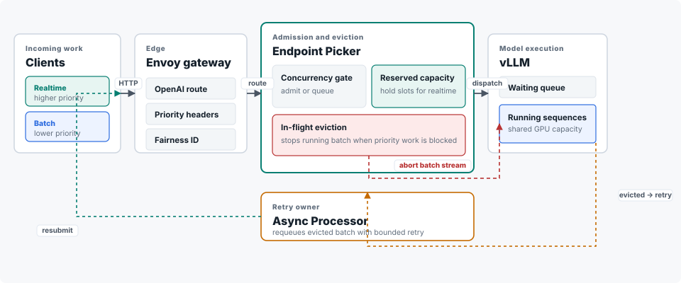

In-flight eviction flow control benchmark results
When batch work fills the GPU, eviction stops running batch jobs to free slots for higher-priority requests. Reclaim took seconds in the measured runs. Median higher-priority TTFT stayed low only when capacity was reserved before the surge.
- Eviction fired when priority traffic was blocked. Batch held the GPU; higher-priority requests arrived; the Endpoint Picker stopped batch streams.
- Reserved capacity set median TTFT. Holding 50% aside was fastest and needed no evictions.
- Eviction did not move TTFT the same way every run. Three repeats: faster twice, slower once.
- Each eviction redoes work. Longer prompts lost more tokens on retry.
- HTTP 429s appeared only at 25% reserve. 50% and 75% reserve served every higher-priority request.
How the system is put together
Requests pass through the gateway, the Endpoint Picker, and one vLLM replica on a single H100. Realtime and batch share the same 48-slot concurrency cap. The Endpoint Picker stops running batch streams when higher-priority traffic cannot be admitted.

Eviction's response to blocked priority traffic
Batch filled the GPU. Higher-priority traffic arrived with no free slots. Eviction stopped nine batch streams. Running count fell from 48 toward zero as those jobs wound down. The chart covers one measured clear-out.
When higher-priority requests are turned away
With 25% reserved, three higher-priority requests received HTTP 429 (two in a burst, one with long prompts). With 50% or 75% reserved, none were turned away.
Latency across headroom settings
50% reserve had the lowest median higher-priority TTFT. No batch streams were stopped in those runs.
Eviction's effect on latency, run to run
Three repeats compared eviction off and on at 25% reserve. All stopped requests retried to completion. Median TTFT was lower with eviction on in two runs and higher in one.
Compute discarded by eviction
When a request is stopped, the work it had already done is thrown away and has to be redone. Longer prompts mean more work thrown away each time.
Operating recommendation
- Size reserve to the surge. Use expected burst rate and prompt length. 50% reserve worked in the single-GPU test; re-check before quoting a latency target.
- Plan for retry. The Endpoint Picker returns HTTP 429 on eviction. The batch client must retry with idempotency and backoff.
- Still open. Multi-GPU pools, full production mix, long endurance runs, and large-prompt admission.
Full data
Every counted run passed the evidence gate. Values are as measured; units are in each column header. Expand a test to see its table.
Test 0: live reclaim transitions in one eviction-on run
matched-treatment-eviction-on-v2-r1 · sampled every ~0.1 s · showing the reclaim window
| Elapsed (s) | vLLM running (req) | EPP saturation (fraction) | Revocations issued (cumulative) | Phase |
|---|---|---|---|---|
| 0.6 | 0 | 0.10 | 0 | batch ramping |
| 1.8 | 37 | 0.77 | 0 | batch filling slots |
| 2.3 | 44 | 1.00 | 6 | saturated · revocations begin |
| 2.9 | 48 | 1.00 | 9 | fully saturated |
| 3.1 | 28 | 0.65 | 9 | reclaim confirmed |
| 6.4 | 26 | 0.54 | 9 | draining |
| 6.5 | 3 | 0.06 | 9 | capacity freed |
| 7.1 | 0 | 0.00 | 9 | idle |
Saturation = in-flight load ÷ max concurrency (48). Revocations = EPP-issued evictions of negative-priority batch. Full series is 100 samples over ~13 s. Source: runs/matched-treatment-eviction-on-v2-r1/targeted_metrics.csv.
Test 1: headroom sweep, higher-priority p95 TTFT by batch ceiling
Medium prompts · each row is the median of 3 gated runs · 48 concurrent slots
| Operating point | Slots reserved | p95 TTFT median (ms) | p95 TTFT min (ms) | p95 TTFT max (ms) | p95 TTFT range (ms) | p95 TTFT stdev (ms) | p95 TPOT median (ms) | Batch p95 e2e median (ms) | Evictions (count) | Recomputed tokens (count) | Max queue (median) | TTFT vs eviction-off (%) |
|---|---|---|---|---|---|---|---|---|---|---|---|---|
| 75% · eviction off | 12 | 1,350.3 | 831.7 | 1,685.2 | 853.5 | 430.0 | 12.0 | 8,507.2 | 0 | 0 | 12.0 | 0.0 |
| 75% · eviction on | 12 | 1,054.6 | 441.8 | 1,554.0 | 1,112.2 | 557.1 | 25.9 | 12,244.6 | 25 | 9,076 | 5.0 | −21.9 |
| 50% · eviction on | 24 | 966.9 | 946.2 | 1,437.5 | 491.3 | 277.9 | 26.3 | 9,422.0 | 0 | 0 | 16.0 | −28.4 |
| 25% · eviction on | 36 | 1,018.7 | 948.7 | 1,044.0 | 95.3 | 49.4 | 11.8 | 14,925.4 | 0 | 0 | 28.0 | −24.6 |
TTFT = time to first token · TPOT = time per output token · e2e = end-to-end · slots reserved = 48 − batch ceiling. Source: analysis/headroom-sweep.csv.
Test 2: matched pairs, eviction off vs on at 75% ceiling
Identical config per pair · all runs valid, config-matched, and image-matched
| Pair | Valid | Control (off) p95 TTFT (ms) | Treatment (on) p95 TTFT (ms) | Difference (ms) | Change (%) |
|---|---|---|---|---|---|
| R1 | yes | 1,685.2 | 1,054.6 | −630.7 | −37.4 |
| R2 | yes | 1,350.3 | 1,554.0 | +203.8 | +15.1 |
| R3 | yes | 831.7 | 441.8 | −389.9 | −46.9 |
Aggregate: median control 1,350 ms; median treatment 1,055 ms; 25 evictions, all retried successfully; 9,076 tokens recomputed or unreturned; slowest issue-to-vLLM-abort p95 = 5.2 ms. Source: analysis/matched-pairs.csv.
Test 3: three audited series
13 audited waves · priority-100 realtime vs priority-−10 batch · all requests completed
| Series | Realtime completed (req) | Batch completed (req) | Evictions (count) | Realtime p95 TTFT median (ms) | Realtime p95 TTFT range (ms) |
|---|---|---|---|---|---|
| 75% ceiling · medium prompts · Poisson 100 RPS · 5 waves | 100 / 100 | 200 / 200 | 40 | 481 | 445 – 1,386 |
| 50% ceiling · medium prompts · simultaneous burst · 5 waves | 100 / 100 | 200 / 200 | 0 | 1,078 | 626 – 1,590 |
| 50% ceiling · long batch prompts · Poisson 100 RPS · 3 waves | 60 / 60 | 120 / 120 | 0 | 1,175 | 1,027 – 1,351 |
Across all three: 260/260 realtime and 520/520 batch completed; 40/40 evictions matched a vLLM abort; 40/40 evicted jobs completed after bounded retry; prefix-cache deltas zero; 0 pod restarts. RPS = requests per second. Source: README.md.
Test 4: discarded compute after eviction
Tokens recomputed or lost on client retry
| Scenario | Validity | Tokens recomputed / lost (count) |
|---|---|---|
| Matched-pairs series (eviction on) · aggregate | valid evidence | 9,076 |
| Valid 5-wave series · medium prompts · 75% ceiling | valid evidence | 15,280 |
| One failed wave · long-context prompts · 75% ceiling | negative evidence | 21,814 |
Eviction returns a terminal 429; the router does not requeue, so this work is recomputed by the client's bounded retry. Source: README.md, analysis/matched-pairs.md.
Fixed configuration for all tests
| Layer | Setting |
|---|---|
| Hardware | 1× H100 · one model-server replica |
| Model | GPT-OSS 20B |
| Serving stack | RHAI 3.4 vLLM · max-num-seqs=96 · max-num-batched-tokens=8192 |
| Router | llm-d-router PR #2093 · flowControl.enableEviction: true |
| Max concurrency | 48 requests |
| Batch ceilings tested | 75%, 50%, 25% |
| Priorities | realtime 100 · standard 0 · batch −10 |
| Prefix cache | Off (query and hit deltas zero) |
| Arrival patterns | simultaneous burst · open-loop Poisson |
Source: README.md fixed-configuration table. Every counted run required all metrics present or it did not start.